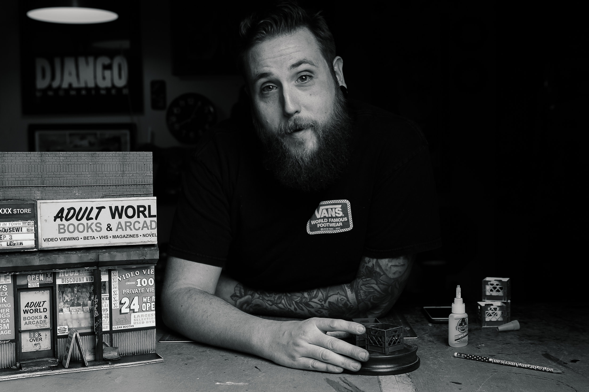

Ryan Thomas
Ryan Monahan is a graphic designer by day and a mixed media sculptor by night. After receiving his BFA in design from Columbia College Chicago, Ryan began to create miniature urban environments from common repurposed materials. Ryan has begun to push the limits of his art by expanding on the degree of detail he incorporates in every piece. From recreating textures to signage, everything is handmade by Ryan. More of his work can be found at: ryanthomasmonahan.com